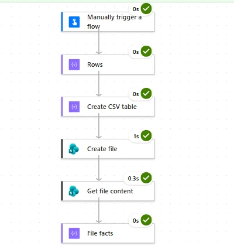

- Power Automate
- Level 5 · Performance and scale · 5 of 6
Working with large files
Small files just work. Larger ones run into limits on message size and on how much content a flow may move in a period of time.
A 2,000-row CSV, end to end
WhatFile content moves between actions as Base64 text, within size and throughput limits.
WhyBase64 is about a third larger than the file, so files use more of the limits than their size suggests.
DemoBuild 2,000 rows → CSV → save to SharePoint → read it back.
The demo flow
Rows: 2,000 generated rows
Create CSV table → 47,556 characters
Create file in a library (1 s)
Get file content (0.3 s)
File facts: 2000 rows, 46 KB


length(body('Create_CSV_table'))| Piece | What it does |
|---|---|
length(...) | Characters in the CSV text: 47,556. |
How file content travels
Bytes in transit
File on disk: 46 KB
In the flow: {"$content-type": …, "$content": "…Base64…"}
Base64 ≈ 4/3 of the size
Pass it straight to Create file, an attachment or an upload
To read a text file as text: base64ToString(body('Get_file_content')?['$content']).
Limits to know
| Limit | Value (official docs, at the time of writing) |
|---|---|
| Message size without chunking | 100 MB |
| Content throughput per 5 minutes | 120 MB on Low, 1.2 GB on other profiles |
| Content throughput per 24 hours | 200 MB (Low), 2 GB (Medium), 10 GB (High) |
Some actions support Allow chunking, which splits a large transfer into parts.
Watch out
- Don't put file content in Compose or variables just to look at it; it doubles the size moved.
- For very large or frequent files, copy between services directly (e.g. Move file) instead of reading content into the flow.
New to this? Start from the basics optional
Chunking: sending a large file in pieces.
Performance profile: Low, Medium or High, set by the owner's licence.
Common mistakes
- Reading whole files to check a property.
- Ignoring the Base64 size overhead.
- Moving gigabytes a day through one flow.